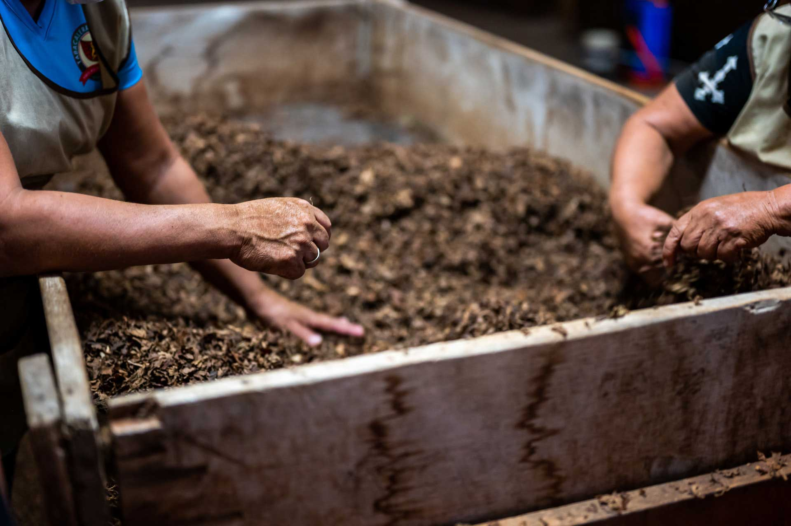
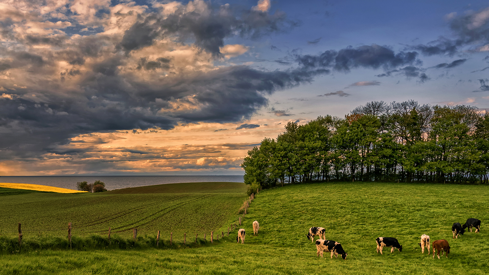
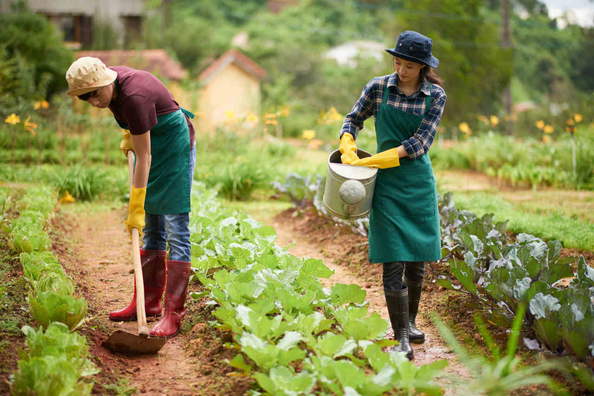

Trabalhadores no Campo

Ambiente Rural

Trabalhadores no Campo
Trabalhadores no Campo
Ambiente Rural
Trabalhadores no Campo
Veja Mais
Contato com a natureza: Uma das maiores vantagens de trabalhar no campo é a possibilidade de estar em contato direto com
a natureza, o que pode proporcionar uma melhor qualidade de vida e bem-estar. Segurança no emprego: O setor agrícola, especialmente em países com forte produção agrícola, tende a oferecer maior
estabilidade no emprego, especialmente em atividades essenciais como a produção de alimentos. Diversidade de atividades: O campo não se limita mais à agricultura tradicional. Hoje, há oportunidades em áreas como
pesquisa, desenvolvimento de novas tecnologias, gestão de propriedades, marketing e logística, oferecendo uma variedade de
atividades e desafios. Contribuição para um futuro mais sustentável: Ao trabalhar no campo, é possível contribuir para a produção de alimentos de
forma mais sustentável, preservando o meio ambiente e garantindo a segurança alimentar. Possibilidade de empreender: O campo oferece diversas oportunidades para empreender, seja na produção de alimentos
orgânicos, na criação de agroturismo ou no desenvolvimento de novas tecnologias para a agricultura.
Condições de trabalho: Dependendo da atividade e da região, as condições de trabalho no campo podem ser desafiadoras,
com longas jornadas, exposição às intempéries e contato com produtos químicos. Isolamento: Em algumas regiões, as propriedades rurais estão localizadas em áreas mais isoladas, o que pode limitar o
acesso a serviços e a uma vida social mais ativa. Saúde: A exposição a produtos químicos, a necessidade de realizar atividades físicas pesadas e a falta de acesso a
serviços de saúde podem comprometer a saúde dos trabalhadores rurais. Baixa remuneração: Em algumas áreas, a remuneração dos trabalhadores rurais ainda é considerada baixa, o que pode
desestimular a entrada de novos profissionais no setor. Falta de qualificação: A falta de qualificação profissional é um desafio tanto para os trabalhadores quanto para as
empresas do setor. Muitas vezes, os profissionais do campo não possuem a formação adequada para as novas tecnologias e demandas
do mercado.
Benefícios:
Desafios:

A agricultura digital, a precisão na agricultura e a sustentabilidade são algumas das principais tendências que estão moldando o mercado de trabalho rural. As novas tecnologias estão automatizando processos, gerando dados para tomada de decisão e otimizando a produção, demandando profissionais com conhecimentos em áreas como:
Agronomia: Engenheiros agrônomos com especialização em áreas como genética, melhoramento de plantas, nutrição de plantas e manejo de pragas e doenças.
Tecnologia da Informação: Profissionais de TI para desenvolvimento de sistemas, análise de dados e gestão de informações.
Engenharia: Engenheiros mecânicos, eletricistas e de automação para desenvolvimento e manutenção de equipamentos agrícolas.
Gestão: Profissionais com habilidades em gestão de projetos, logística, marketing e finanças para gerenciar propriedades rurais e empresas do agronegócio.
Ciências Biológicas: Biólogos com foco em biotecnologia, melhoramento genético e conservação ambiental.
Além dos conhecimentos técnicos específicos, os profissionais que desejam atuar no campo precisam desenvolver habilidades como:
Adaptabilidade: O setor agrícola está em constante evolução, exigindo que os profissionais sejam capazes de se adaptar às novas tecnologias e aos desafios do mercado.
Trabalho em equipe: A colaboração é fundamental para o sucesso em projetos complexos, que envolvem diversas áreas do conhecimento.
Criatividade e inovação: A capacidade de pensar fora da caixa e desenvolver soluções criativas para os desafios do campo é altamente valorizada.
Foco em resultados: Os profissionais do campo precisam ser orientados para resultados e capazes de entregar soluções eficientes e eficazes.
Sustentabilidade: O compromisso com a sustentabilidade ambiental e social é cada vez mais importante para as empresas do agronegócio.